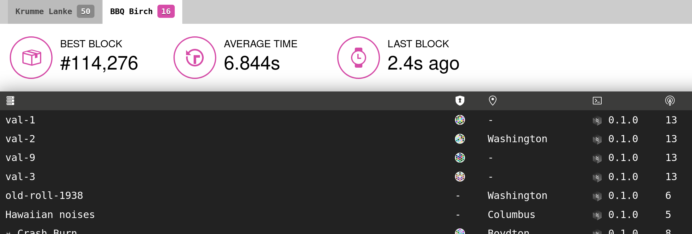

class: center, middle # Rust libp2p project update ## October 2018 https://github.com/libp2p/rust-libp2p --- # Major success: integrated in Substrate ## Substrate - Framework for building blockchains. Uses libp2p for its networking. - https://github.com/paritytech/substrate - Testnet running right now! https://telemetry.polkadot.io/ - Protocols used: kademlia, identify, ping, "bbq" (a custom protocol) <div style="position: absolute; bottom: 5%; right: 10%; left: 10%;">  </div> ## Polkadot - Polkadot will be based on Substrate. --- # Right now: big rework in progress ## Initial design was too unpredictable - Realization back in July when integrating into Substrate. - Substrate network was not working well. - Summary: https://twitter.com/tomaka17/status/1048547869815394304 ## The rework: already done - 8,434 lines of code added and 2,362 deleted since Sep 1st. - Success! Fixed **all** the issues we had in substrate. - Made the network more predictable, less racy. ## The rework: in progress - Objective: make the library easier to use (and thus also less bug-prone). - Not merged yet: 4,269 additions and 5,676 deletions. - Apologize in advance for the breaking changes to the people who were trying to use rust-libp2p. --- # Future work ## Ethereum 2.0 - Rust-libp2p hopefully to be used to write an Ethereum 2.0 client. - Prototype that uses rust-libp2p: https://github.com/sigp/lighthouse - Prototype that uses substrate: https://github.com/paritytech/shasper ## Ethereum 1.0 - *Maybe* for the light client of parity-ethereum. - Objective: run parity-ethereum in a browser. ## Misc - Parity Tech will continue to maintain rust-libp2p - Will get non-Parity contributors on board. <div style="position: absolute; bottom: 5%; right: 42%;"> .center[ <img src="parity-logo.png" alt="Parity" height="96" /> ] </div>